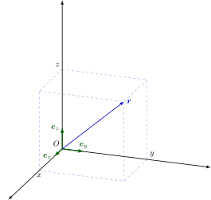

数学符号表
本文规定了 OI Wiki 中数学符号的推荐写法，并给出了一些应用范例。
本文参考了 GB/T 3102.11-1993 和 ISO 80000-2:2019 修订，故基本与国内通行教材的符号体系兼容。
符号的 LaTeX 写法请参考 本文章的源代码
数理逻辑
| 编号 | 符号，表达式 | 意义，等同表述 | 备注与示例 |
|---|---|---|---|
| n1.1 | \(p \land q\) | \(p\) 和 \(q\) 的合取 | \(p\) 与 \(q\). |
| n1.2 | \(p \lor q\) | \(p\) 和 \(q\) 的析取 | \(p\) 或 \(q\); 此处的 "或" 是包含的，即若 \(p\)，\(q\) 中有一个为真陈述，则 \(p \lor q\) 为真。 |
| n1.3 | \(\lnot p\) | \(p\) 的否定 | 非 \(p\). |
| n1.4 | \(p \implies q\) | \(p\) 蕴含 \(q\); 若 \(p\) 为真，则 \(q\) 为真 |
\(q \impliedby p\) 和 \(p \implies q\) 同义。 |
| n1.5 | \(p \iff q\) | \(p\) 等价于 \(q\) | \((p \implies q) \land (q \implies p)\) 和 \(p \iff q\) 同义。 |
| n1.6 | \((\forall~x \in A)~~p(x)\) | 对 \(A\) 中所有的 \(x\), 命题 \(p(x)\) 均为真 | 如果从上下文中可以得知考虑的是哪个集合 \(A\), 可以使用记号 \((\forall~x)~~p(x)\). \(\forall\) 称为全称量词。 \(x \in A\) 的含义见 n2.1. |
| n1.7 | \((\exists~x \in A)~~p(x)\) | 存在一个属于 \(A\) 的 \(x\) 使得 \(p(x)\) 为真 | 如果从上下文中可以得知考虑的是哪个集合 \(A\), 可以使用记号 \((\exists~x)~~p(x)\). \(\exists\) 称为存在量词。 \(x \in A\) 的含义见 n2.1. \((\exists!~x)~~p(x)\)（唯一量词）用来表示恰有一个 \(x\) 使得 \(p(x)\) 为真。 \(\exists!\) 也可以写作 \(\exists^1\). |
集合论
| 编号 | 符号，表达式 | 意义，等同表述 | 备注与示例 |
|---|---|---|---|
| n2.1 | \(x \in A\) | \(x\) 属于 \(A\)，\(x\) 是集合 \(A\) 中的元素 | \(A \ni x\) 和 \(x \in A\) 同义。 |
| n2.2 | \(y \notin A\) | \(y\) 不属于 \(A\)，\(y\) 不是集合 \(A\) 中的元素 | |
| n2.3 | \(\{x_1, x_2, \dots, x_n\}\) | 含元素 \(x_1, x_2, \dots, x_n\) 的集合 | 也可写作 \(\{x_i ~\vert~ i \in I\}\), 其中 \(I\) 表示指标集。 |
| n2.4 | \(\{x \in A ~\vert~ p(x)\}\) | \(A\) 中使命题 \(p(x)\) 为真的所有元素组成的集合 | 例如 \(\{x \in \textbf{R} ~\vert~ x \geq 5\}\); 如果从上下文中可以得知考虑的是哪个集合 \(A\)，可以使用符号 \(\{x ~\vert~ p(x)\}\)（如在只考虑实数集时可使用 \(\{x ~\vert~ x \geq 5\}\)） \(\vert\) 也可以使用冒号替代，如 \(\{x \in A : p(x)\}\). |
| n2.5 | \(\operatorname{card} A\); \(\vert A\vert\) |
\(A\) 中的元素个数，\(A\) 的基数 | |
| n2.6 | \(\varnothing\) | 空集 | 不应使用 \(\emptyset\). |
| n2.7 | \(B \subseteq A\) | \(B\) 包含于 \(A\) 中，\(B\) 是 \(A\) 的子集 | \(B\) 的每个元素都属于 \(A\). \(\subset\) 也可用于该含义，但请参阅 n2.8 的说明。 \(A \supseteq B\) 和 \(B \subseteq A\) 同义。 |
| n2.8 | \(B \subset A\) | \(B\) 真包含于 \(A\) 中，\(B\) 是 \(A\) 的真子集 | \(B\) 的每个元素都属于 \(A\), 且 \(A\) 中至少有一个元素不属于 \(B\). 若 \(\subset\) 的含义取 n2.7, 则 n2.8 对应的符号应使用 \(\subsetneq\). \(A \supset B\) 与 \(B \subset A\) 同义。 |
| n2.9 | \(A \cup B\) | \(A\) 和 \(B\) 的并集 | \(A \cup B := \{x ~\vert~ x \in A \lor x \in B\}\); \(:=\) 的定义参见 n4.3 |
| n2.10 | \(A \cap B\) | \(A\) 和 \(B\) 的交集 | \(A \cap B := \{x ~\vert~ x \in A \land x \in B\}\); \(:=\) 的定义参见 n4.3 |
| n2.11 | \(\displaystyle \bigcup\limits_{i=1}^n A_i\) | 集合 \(A_1, A_2, \dots, A_n\) 的并集 | \(\displaystyle \bigcup\limits_{i=1}^n A_i=A_1\cup A_2\cup \dots \cup A_n\); 也可使用 \(\displaystyle \bigcup\nolimits_{i=1}^n\)，\(\displaystyle \bigcup\limits_{i\in I}\)，\(\displaystyle \bigcup\nolimits_{i\in I}\), 其中 \(I\) 表示指标集 |
| n2.12 | \(\displaystyle \bigcap\limits_{i=1}^n A_i\) | 集合 \(A_1, A_2, \dots, A_n\) 的交集 | \(\displaystyle \bigcap\limits_{i=1}^n A_i=A_1\cap A_2\cap \dots \cap A_n\); 也可使用 \(\displaystyle \bigcap\nolimits_{i=1}^n\)，\(\displaystyle \bigcap\limits_{i\in I}\)，\(\displaystyle \bigcap\nolimits_{i\in I}\), 其中 \(I\) 表示指标集 |
| n2.13 | \(A \setminus B\) | \(A\) 和 \(B\) 的差集 | \(A \setminus B = \{x ~\vert~ x \in A \land x \notin B\}\); 不应使用 \(A - B\); 当 \(B\) 是 \(A\) 的子集时也可使用 \(\complement_A B\), 如果从上下文中可以得知考虑的是哪个集合 \(A\)，则 \(A\) 可以省略。 不引起歧义的情况下也可使用 \(\overline{B}\) 表示集合 \(B\) 的补集。 |
| n2.14 | \((a, b)\) | 有序数对 \(a\)，\(b\); 有序偶 \(a\)，\(b\) |
\((a, b) = (c, d)\) 当且仅当 \(a = c\) 且 \(b = d\). |
| n2.15 | \((a_1, a_2, \dots, a_n)\) | 有序 \(n\) 元组 | 参见 n2.14. |
| n2.16 | \(A \times B\) | 集合 \(A\) 和 \(B\) 的笛卡尔积 | \(A \times B = \{(x, y) ~\vert~ x \in A \land y \in B\}\). |
| n2.17 | \(\displaystyle \prod\limits_{i=1}^{n} A_i\) | 集合 \(A_1, A_2, \dots, A_n\) 的笛卡尔积 | \(\displaystyle \prod\limits_{i=1}^{n} A_i=\{(x_1, x_2, \dots, x_n) ~\vert~ x_1 \in A_1, x_2 \in A_2, \dots, x_n \in A_n\}\); \(A \times A \times \dots \times A\) 记为 \(A^n\), 其中 \(n\) 是乘积中的因子数。 |
| n2.18 | \(\mathrm{id}_A\) | \(A\times A\) 的对角集 | \(\mathrm{id}_A=\{(x, x)~\vert~x\in A\}\); 如果从上下文中可以得知考虑的是哪个集合 \(A\), 则 \(A\) 可以省略。 |
标准数集和区间
| 编号 | 符号，表达式 | 意义，等同表述 | 备注与示例 |
|---|---|---|---|
| n3.1 | \(\mathbf{N}\) | 自然数集 | \(\mathbf{N} = \{0, 1, 2, 3, \dots\}\); \(\mathbf{N}^* = \mathbf{N}_+ = \{1, 2, 3, \dots\}\); 可用如下方式添加其他限制：\(\mathbf{N}_{> 5} = \{n \in \mathbf{N} ~\vert~ n > 5\}\); 也可使用 \(\mathbb{N}\). |
| n3.2 | \(\mathbf{Z}\) | 整数集 | \(\mathbf{Z}^* = \mathbf{Z}_+ = \{n \in \mathbf{Z} ~\vert~ n \ne 0\}\); 可用如下方式添加其他限制：\(\mathbf{Z}_{> -3} = \{n \in \mathbf{Z} ~\vert~ n > -3\}\); 也可使用 \(\mathbb{Z}\). |
| n3.3 | \(\mathbf{Q}\) | 有理数集 | \(\mathbf{Q}^* = \mathbf{Q}_+ = \{r \in \mathbf{Q} ~\vert~ r \ne 0\}\); 可用如下方式添加其他限制：\(\mathbf{Q}_{< 0} = \{r \in \mathbf{Q} ~\vert~ r < 0\}\); 也可使用 \(\mathbb{Q}\). |
| n3.4 | \(\mathbf{R}\) | 实数集 | \(\mathbf{R}^* = \mathbf{R}_+ = \{x \in \mathbf{R} ~\vert~ x \ne 0\}\); 可用如下方式添加其他限制：\(\mathbf{R}_{> 0} = \{x \in \mathbf{R} ~\vert~ x > 0\}\); 也可使用 \(\mathbb{R}\). |
| n3.5 | \(\mathbf{C}\) | 复数集 | \(\mathbf{C}^* = \mathbf{C}_+ = \{z \in \mathbf{C} ~\vert~ z \ne 0\}\); 也可使用 \(\mathbb{C}\). |
| n3.6 | \(\mathbf{P}\) | （正）素数集 | \(\mathbf{P} = \{2, 3, 5, 7, 11, 13, 17, \dots\}\); 也可使用 \(\mathbb{P}\). |
| n3.7 | \([a, b]\) | \(a\) 到 \(b\) 的闭区间 | \([a, b] = \{x \in \mathbf{R} ~\vert~ a \leq x \leq b\}\). |
| n3.8 | \((a, b]\) | \(a\) 到 \(b\) 的左开右闭区间 | \((a, b] = \{x \in \mathbf{R} ~\vert~ a < x \leq b\}\); \((-\infty, b] = \{x \in \mathbf{R} ~\vert~ x \leq b\}\). |
| n3.9 | \([a, b)\) | \(a\) 到 \(b\) 的左闭右开区间 | \([a, b) = \{x \in \mathbf{R} ~\vert~ a \leq x < b\}\); \([a, +\infty) = \{x \in \mathbf{R} ~\vert~ a \leq x\}\). |
| n3.10 | \((a, b)\) | \(a\) 到 \(b\) 的开区间 | \((a, b) = \{x \in \mathbf{R} ~\vert~ a < x < b\}\); \((-\infty, b) = \{x \in \mathbf{R} ~\vert~ x < b\}\); \((a, +\infty) = \{x \in \mathbf{R} ~\vert~ a < x\}\). |
关系
| 编号 | 符号，表达式 | 意义，等同表述 | 备注与示例 |
|---|---|---|---|
| n4.1 | \(a = b\) | \(a\) 等于 \(b\) | \(\equiv\) 用于强调某等式是恒等式 该符号的另一个含义参见 n4.18. |
| n4.2 | \(a \ne b\) | \(a\) 不等于 \(b\) | |
| n4.3 | \(a := b\) | \(a\) 定义为 \(b\) | 参见 n2.9, n2.10 |
| n4.4 | \(a \approx b\) | \(a\) 约等于 \(b\) | 不排除相等。 |
| n4.5 | \(a \simeq b\) | \(a\) 渐进等于 \(b\) | 例如： 当 \(x\to a\) 时，\(\dfrac{1}{\sin(x-a)} \simeq \dfrac{1}{x-a}\); \(x \to a\) 的含义参见 n4.15. |
| n4.6 | \(a \propto b\) | \(a\) 与 \(b\) 成正比 | 也可使用 \(a \sim b\). \(\sim\) 也用于表示等价关系。 |
| n4.7 | \(M \cong N\) | \(M\) 与 \(N\) 全等 | 当 \(M\) 和 \(N\) 是点集（几何图形）时。 该符号也用于表示代数结构的同构。 |
| n4.8 | \(a < b\) | \(a\) 小于 \(b\) | |
| n4.9 | \(b > a\) | \(b\) 大于 \(a\) | |
| n4.10 | \(a \leq b\) | \(a\) 小于等于 \(b\) | |
| n4.11 | \(b \geq a\) | \(b\) 大于等于 \(a\) | |
| n4.12 | \(a \ll b\) | \(a\) 远小于 \(b\) | |
| n4.13 | \(b \gg a\) | \(b\) 远大于 \(a\) | |
| n4.14 | \(\infty\) | 无穷大 | 该符号 不 是数字。 也可以使用 \(+\infty\)，\(-\infty\). |
| n4.15 | \(x \to a\) | \(x\) 趋近于 \(a\) | 一般出现在极限表达式中。 \(a\) 也可以为 \(\infty\)，\(+\infty\)，\(-\infty\). |
| n4.16 | \(m \mid n\) | \(m\) 整除 \(n\) | 对整数 \(m\)，\(n\): \((\exists~k \in \mathbf{Z})~~m\cdot k = n\). |
| n4.17 | \(m \perp n\) | \(m\) 与 \(n\) 互质 | 对整数 \(m\)，\(n\): \((\nexists~k \in \mathbf{Z}_{>1})~~(k \mid m) \land (k \mid n)\); 该符号的另一种用法参见 n5.2 |
| n4.18 | \(n \equiv k \pmod m\) | \(n\) 模 \(m\) 与 \(k\) 同余 | 对整数 \(n\)，\(k\)，\(m\): \(m \mid (n - k)\); 不要与 n4.1 中提到的相混淆。 |
初等几何学
| 编号 | 符号，表达式 | 意义，等同表述 | 备注与示例 |
|---|---|---|---|
| n5.1 | \(\parallel\) | 平行 | |
| n5.2 | \(\perp\) | 垂直 | 该符号的另一种用法参见 n4.17 |
| n5.3 | \(\angle\) | （平面）角 | |
| n5.4 | \(\overline{\mathrm{AB}}\) | 线段 \(\mathrm{AB}\) | |
| n5.5 | \(\overrightarrow{\mathrm{AB}}\) | 有向线段 \(\mathrm{AB}\) | |
| n5.6 | \(d(\mathrm{A}, \mathrm{B})\) | 点 \(\mathrm{A}\) 和 \(\mathrm{B}\) 之间的距离 | 即 \(\overline{\mathrm{AB}}\) 的长度。 |
运算符
| 编号 | 符号，表达式 | 意义，等同表述 | 备注与示例 |
|---|---|---|---|
| n6.1 | \(a + b\) | \(a\) 加 \(b\) | |
| n6.2 | \(a - b\) | \(a\) 减 \(b\) | |
| n6.3 | \(a \pm b\) | \(a\) 加或减 \(b\) | |
| n6.4 | \(a \mp b\) | \(a\) 减或加 \(b\) | \(-(a \pm b) = -a \mp b\). |
| n6.5 | \(a \cdot b\); \(a \times b\); \(ab\) |
\(a\) 乘 \(b\) | 若出现小数点，则应只使用 \(\times\); 部分用例参见 n2.16, n2.17, n14.11, n14.12 |
| n6.6 | \(\dfrac{a}{b}\); \(a/b\); \(a:b\) |
\(a\) 除以 \(b\) | \(\dfrac{a}{b}=a\cdot b^{-1}\); 可用 \(:\) 表示同一量纲的数值的比率。 不应使用 \(÷\). |
| n6.7 | \(\displaystyle \sum\limits_{i=1}^n a_i\) | \(a_1 + a_2 + \dots + a_n\) | 也可使用 \(\displaystyle \sum\nolimits_{i=1}^n a_i\)，\(\displaystyle \sum\limits_i a_i\)，\(\displaystyle \sum\nolimits_i a_i\)，\(\displaystyle \sum a_i\). |
| n6.8 | \(\displaystyle \prod\limits_{i=1}^n a_i\) | \(a_1 \cdot a_2 \cdot \dots \cdot a_n\) | 也可使用 \(\displaystyle \prod\nolimits_{i=1}^n a_i\)，\(\displaystyle \prod\limits_i a_i\)，\(\displaystyle \prod\nolimits_i a_i\)，\(\displaystyle \prod a_i\). |
| n6.9 | \(a^p\) | \(a\) 的 \(p\) 次幂 | |
| n6.10 | \(a^{1/2}\); \(\sqrt{a}\) |
\(a\) 的 \(1/2\) 次方，\(a\) 的平方根 | 应避免使用 \(\sqrt{}a\). |
| n6.11 | \(a^{1/n}\); \(\sqrt[n]{a}\) |
\(a\) 的 \(1/n\) 次幂，\(a\) 的 \(n\) 次根 | 应避免使用 \(\sqrt[n]{}a\). |
| n6.12 | \(\bar{x}\); \(\bar{x}_a\) |
\(x\) 的算数均值 | 其他均值有： 调和均值 \(\bar{x}_h\); 几何均值 \(\bar{x}_g\); 二次均值/均方根 \(\bar{x}_q\) 或 \(\bar{x}_{rms}\). \(\bar{x}\) 也用于表示复数 \(x\) 的共轭，参见 n11.6. |
| n6.13 | \(\operatorname{sgn} a\) | \(a\) 的符号函数 | 对实数 \(a\): \(\operatorname{sgn} a=1\quad (a>0)\); \(\operatorname{sgn} a=-1\quad (a<0)\); \(\operatorname{sgn} 0=0\); 参见 n11.7. |
| n6.14 | \(\inf M\) | \(M\) 的下确界 | 小于等于非空集合 \(M\) 中元素的最大上界。 |
| n6.15 | \(\sup M\) | \(M\) 的上确界 | 大于等于非空集合 \(M\) 中元素的最小下界。 |
| n6.16 | \(\lvert a\rvert\) | \(a\) 的绝对值 | 也可使用 \(\operatorname{abs} a\). |
| n6.17 | \(\lfloor a\rfloor\) | 向下取整 小于等于实数 \(a\) 的最大整数 |
例如： \(\lfloor 2.4\rfloor = 2\); \(\lfloor -2.4\rfloor = -3\). |
| n6.18 | \(\lceil a\rceil\) | 向上取整 大于等于实数 \(a\) 的最小整数 |
例如： \(\lceil 2.4\rceil = 3\); \(\lceil -2.4\rceil = -2\). |
| n6.19 | \(\min(a, b)\); \(\min\{a, b\}\) |
\(a\) 和 \(b\) 的最小值 | 可推广到有限集中。 要表示无限集中的最小值建议使用 \(\inf\), 参见 n6.14 |
| n6.20 | \(\max(a, b)\); \(\max\{a, b\}\) |
\(a\) 和 \(b\) 的最大值 | 可推广到有限集中。 要表示无限集中的最大值建议使用 \(\sup\), 参见 n6.15 |
| n6.21 | \(n \bmod m\) | \(n\) 模 \(m\) 的余数 | 对正整数 \(n\)，\(m\): \((\exists~q\in\mathbf{N}, r\in[0, m))~~n=qm+r\); 其中 \(r=n \bmod m\). |
| n6.22 | \(\gcd(a, b)\); \(\gcd\{a, b\}\) |
整数 \(a\) 和 \(b\) 的最大公因数 | 可推广到有限集中。不引起歧义的情况下可写为 \((a, b)\). |
| n6.23 | \(\operatorname{lcm}(a, b)\); \(\operatorname{lcm}\{a, b\}\) |
整数 \(a\) 和 \(b\) 的最小公倍数 | 可推广到有限集中。不引起歧义的情况下可写为 \([a, b]\); \((a, b)[a, b]=\lvert ab\rvert\). |
组合数学
本节中的 \(n\) 和 \(k\) 是自然数，\(a\) 是复数，且 \(k\leq n\).
| 编号 | 符号，表达式 | 意义，等同表述 | 备注与示例 |
|---|---|---|---|
| n7.1 | \(n!\) | 阶乘 | \(n!=\prod_{k=1}^n k=1\cdot 2\cdot 3\cdot \dots \cdot n\quad (n>0)\); \(0!=1\). |
| n7.2 | \(a^{\underline{k}}\) | 下降阶乘幂 | \(a^{\underline{k}}=a\cdot(a-1)\cdot \dots \cdot(a-k+1)\quad (k>0)\); \(a^{\underline{0}}=1\); \(n^{\underline{k}}=\dfrac{n!}{(n-k)!}\). |
| n7.3 | \(a^{\overline{k}}\) | 上升阶乘幂 | \(a^{\overline{k}}=a\cdot(a+1)\cdot \dots \cdot(a+k-1)\quad (k>0)\); \(a^{\overline{0}}=1\); \(n^{\overline{k}}=\dfrac{(n+k-1)!}{(n-1)!}\). |
| n7.4 | \(\dbinom{n}{k}\) | 组合数 | \(\dbinom{n}{k}=\dfrac{n!}{k!(n-k)!}\). |
| n7.5 | \(\displaystyle{n\brack k}\) | 第一类 Stirling 数 | \(\displaystyle{n+1\brack k}=n{n\brack k}+{n\brack k-1}\); \(\displaystyle x^{\overline{n}}=\sum_{k=0}^n{n\brack k}x^k\). |
| n7.6 | \(\displaystyle{n\brace k}\) | 第二类 Stirling 数 | \(\displaystyle{n\brace k}=\frac{1}{k!}\sum_{i=0}^k(-1)^i\binom{k}{i}(k-i)^n\); \(\displaystyle\sum_{k=0}^n{n\brace k}x^{\underline{k}}=x^n\). |
函数
| 编号 | 符号，表达式 | 意义，等同表述 | 备注与示例 |
|---|---|---|---|
| n8.1 | \(f\) | 函数 | |
| n8.2 | \(f(x)\)，\(f(x_1, \dots, x_n)\) | 函数 \(f\) 在 \(x\) 处的值 函数 \(f\) 在 \((x_1, \dots, x_n)\) 处的值 |
|
| n8.3 | \(\operatorname{dom} f\) | \(f\) 的定义域 | 也可使用 \(\mathrm{D}(f)\). |
| n8.4 | \(\operatorname{ran} f\) | \(f\) 的值域 | 也可使用 \(\mathrm{R}(f)\). |
| n8.5 | \(f:A\to B\) | \(f\) 是 \(A\) 到 \(B\) 的映射 | \(\operatorname{dom} f=A\) 且 \((\forall~x \in\operatorname{dom} f)~~ f(x) \in B\). |
| n8.6 | \(x\mapsto T(x), x\in A\) | 将所有 \(x\in A\) 映射到 \(T(x)\) 的函数 | \(T(x)\) 仅用于定义，用来表示某个参数为 \(x\in A\) 的某个函数值。若这个函数为 \(f\), 则对所有 \(x\in A\) 均有 \(f(x)=T(x)\). 因此 \(T(x)\) 通常用来定义函数 \(f\). 例如： \(x\mapsto 3x^2y, x\in[0, 2]\); 这是由 \(3x^2y\) 定义的一个关于 \(x\) 的二次函数。若未引入函数符号，则用 \(3x^2y\) 表示该函数 |
| n8.7 | \(f^{-1}\) | \(f\) 的反函数 | 函数 \(f\) 的反函数 \(f^{-1}\) 有定义当且仅当 \(f\) 是单射。 若 \(f\) 是单射，则 \(\operatorname{dom}\left(f^{-1}\right) = \operatorname{ran} f\)，\(\operatorname{ran}\left(f^{-1}\right) = \operatorname{dom} f\), 且 \((\forall~x\in\operatorname{dom} f)~~f^{-1}(f(x)) = x\). 不要与函数的倒数 \(f(x)^{-1}\) 混淆。 |
| n8.8 | \(g\circ f\) | \(f\) 和 \(g\) 的复合函数 | \((g\circ f)(x)=g(f(x))\). |
| n8.9 | \(f:x\mapsto y\) | \(f(x)=y\)，\(f\) 将 \(x\) 映射到 \(y\) | |
| n8.10 | \(f\vert_a^b\); \(f(\dots, u, \dots)\vert_{u=a}^{u=b}\) |
\(f(b)-f(a)\); \(f(\dots, b, \dots)-f(\dots, a, \dots)\) |
主要用于定积分的计算中。 |
| n8.11 | \(\displaystyle \lim\limits_{x\to a}f(x)\); \(\lim\nolimits_{x\to a}f(x)\) |
当 \(x\) 趋近于 \(a\) 时 \(f(x)\) 的极限 | \(\lim\nolimits_{x\to a}f(x)=b\) 可以写成 \(f(x)\to b\quad (x \to a)\). 右极限和左极限的符号分别为 \(\lim\nolimits_{x\to a+}f(x)\) 和 \(\lim\nolimits_{x\to a-}f(x)\). |
| n8.12 | \(f(x) = O(g(x))\) | \(\lvert f(x)/g(x)\rvert\) 在上下文隐含的限制中有上界，\(f(x)\) 的阶不高于 \(g(x)\) | 当 \(f/g\) 与 \(g/f\) 均有界时称 \(f\) 与 \(g\) 是同阶的。 使用符号 "\(=\)" 是出于历史原因，其在此处不表示等价，因为不满足传递性。 例如： \(\sin x=O(x)\quad (x\to 0)\). |
| n8.13 | \(f(x) = o(g(x))\) | 在上下文隐含的限制中有 \(f(x)/g(x)\to 0\)，\(f(x)\) 的阶高于 \(g(x)\) | 使用符号 "\(=\)" 是出于历史原因，其在此处不表示等价，因为不满足传递性。 例如： \(\cos x=1+o(x)\quad (x\to 0)\). |
| n8.14 | \(\Delta f\) | \(f\) 的有限增量 | 上下文隐含的两函数值的差分。例如： \(\Delta x=x_2-x_1\); \(\Delta f(x)=f(x_2)-f(x_1)\). |
| n8.15 | \(\dfrac{\mathrm{d}f}{\mathrm{d}x}\); \(f'\) |
\(f\) 对 \(x\) 的导（函）数 | 仅用于一元函数。 可以显式指明自变量，如 \(\dfrac{\mathrm{d}f(x)}{\mathrm{d}x}\)，\(f'(x)\). |
| n8.16 | \(\left(\dfrac{\mathrm{d}f}{\mathrm{d}x}\right)_{x=a}\); \(f'(a)\) |
\(f\) 在 \(a\) 处的导（函）数值 | 参见 n8.15 |
| n8.17 | \(\dfrac{\mathrm{d}^n f}{\mathrm{d}x^n}\); \(f^{(n)}\) |
\(f\) 对 \(x\) 的 \(n\) 阶导（函）数 | 仅用于一元函数。 可以显式指明自变量，如 \(\dfrac{\mathrm{d}^n f(x)}{\mathrm{d}x^n}\)，\(f^{(n)}(x)\). 可用 \(f''\) 和 \(f'''\) 分别表示 \(f^{(2)}\) 和 \(f^{(3)}\). |
| n8.18 | \(\dfrac{\partial f}{\partial x}\); \(f_x\) |
\(f\) 对 \(x\) 的偏导数 | 仅用于多元函数。 可以显式指明自变量，如 \(\dfrac{\partial f(x, y, \dots)}{\partial x}\)，\(f_x(x, y, \dots)\). 可以扩展到高阶，如 \(f_{xx}=\dfrac{\partial^2 f}{\partial x^2}=\dfrac{\partial}{\partial x}\left(\dfrac{\partial f}{\partial x}\right)\); \(f_{xy}=\dfrac{\partial^2 f}{\partial y\partial x}=\dfrac{\partial}{\partial y}\left(\dfrac{\partial f}{\partial x}\right)\). |
| n8.19 | \(\dfrac{\partial(f_1, \dots, f_m)}{\partial(x_1, \dots, x_n)}\) | Jacobi 矩阵 | 参见1 |
| n8.20 | \(\mathrm{d}f\) | \(f\) 的全微分 | \(\mathrm{d}f(x, y, \dots)=\dfrac{\partial f}{\partial x}\mathrm{d}x+\dfrac{\partial f}{\partial y}\mathrm{d}y+\dots\). |
| n8.21 | \(\delta f\) | \(f\) 的（无穷小）变分 | |
| n8.22 | \(\displaystyle \int f(x)\mathrm{d}x\) | \(f\) 的不定积分 | |
| n8.23 | \(\displaystyle \int\limits_a^b f(x)\mathrm{d}x\) | \(f\) 从 \(a\) 到 \(b\) 的定积分 | 也可使用 \(\displaystyle \int\nolimits_a^b f(x)\mathrm{d}x\); 定积分还可以定义在更一般的域上。如 \(\displaystyle\int\limits_C\)，\(\displaystyle\int\limits_S\)，\(\displaystyle\int\limits_V\)，\(\displaystyle\oint\), 分别表示在曲线 \(C\), 曲面 \(S\), 三维区域 \(V\), 和闭曲线或曲面上的定积分。 多重积分可写成 \(\displaystyle\iint\)，\(\displaystyle\iiint\) 等。 |
| n8.24 | \(f*g\) | 函数 \(f\) 和 \(g\) 的卷积 | \(\displaystyle (f*g)(x)=\int\limits_{-\infty}^{\infty}f(y)g(x-y)\mathrm{d}y\). |
指数和对数函数
\(x\) 可以是复数。
| 编号 | 符号，表达式 | 意义，等同表述 | 备注与示例 |
|---|---|---|---|
| n9.1 | \(\mathrm{e}\) | 自然对数的底 | \(\displaystyle \mathrm{e}=\lim\limits_{n\to\infty}\left(1+\frac{1}{n}\right)^n=2.718~281~8\dots\); 不要写成 \(e\). |
| n9.2 | \(a^x\) | \(x\) 的指数函数（以 \(a\) 为底） | 参见 n6.9. |
| n9.3 | \(\mathrm{e}^x\); \(\exp x\) |
\(x\) 的指数函数（以 \(\mathrm{e}\) 为底） | |
| n9.4 | \(\log_a x\) | \(x\) 的以 \(a\) 为底的对数 | 当底数不需要指定的时候可以使用 \(\log x\). 不应用 \(\log x\) 替换 \(\ln x\)，\(\lg x\)，\(\operatorname{lb} x\) 中的任意一个。 |
| n9.5 | \(\ln x\) | \(x\) 的自然对数 | \(\ln x = \log_{\mathrm{e}} x\); 参见 n9.4. |
| n9.6 | \(\lg x\) | \(x\) 的常用对数 | \(\lg x = \log_{10} x\); 参见 n9.4. |
| n9.7 | \(\operatorname{lb} x\) | \(x\) 的以 \(2\) 为底的对数 | \(\operatorname{lb} x = \log_2 x\); 参见 n9.4. |
三角函数和双曲函数
| 编号 | 符号，表达式 | 意义，等同表述 | 备注与示例 |
|---|---|---|---|
| n10.1 | \(\pi\) | 圆周率 | \(\pi = 3.141~592~6\dots\). |
| n10.2 | \(\sin x\) | \(x\) 的正弦 | \(\sin x=\dfrac{\mathrm{e}^{\mathrm{i}x}-\mathrm{e}^{-\mathrm{i}x}}{2\mathrm{i}}\); \((\sin x)^n\)，\((\cos x)^n\)(\(n\geq 2\)) 等通常写为 \(\sin^n x\)，\(\cos^n x\) 等。 |
| n10.3 | \(\cos x\) | \(x\) 的余弦 | \(\cos x = \sin(x + \pi/2)\). |
| n10.4 | \(\tan x\) | \(x\) 的正切 | \(\tan x = \sin x/\cos x\); 不可使用 \(\operatorname{tg} x\). |
| n10.5 | \(\cot x\) | \(x\) 的余切 | \(\cot x = 1/\tan x\); 不可使用 \(\operatorname{ctg} x\). |
| n10.6 | \(\sec x\) | \(x\) 的正割 | \(\sec x = 1/\cos x\). |
| n10.7 | \(\csc x\) | \(x\) 的余割 | \(\csc x = 1/\sin x\); 不可使用 \(\operatorname{cosec} x\). |
| n10.8 | \(\arcsin x\) | \(x\) 的反正弦 | \(y = \arcsin x \iff x = \sin y\quad (-\pi/2 \leq y \leq \pi/2)\). |
| n10.9 | \(\arccos x\) | \(x\) 的反余弦 | \(y = \arccos x \iff x = \cos y\quad (0 \leq y \leq \pi)\). |
| n10.10 | \(\arctan x\) | \(x\) 反正切 | \(y = \arctan x \iff x = \tan y\quad (-\pi/2 \leq y \leq \pi/2)\); 不可使用 \(\operatorname{arctg} x\). |
| n10.11 | \(\operatorname{arccot} x\) | \(x\) 反余切 | \(y = \operatorname{arccot} x \iff x = \cot y\quad (0 \leq y \leq \pi)\); 不可使用 \(\operatorname{arcctg} x\). |
| n10.12 | \(\operatorname{arcsec} x\) | \(x\) 反正割 | \(y = \operatorname{arcsec} x \iff x = \sec y\quad (0\leq y \leq \pi, y\ne \pi/2)\). |
| n10.13 | \(\operatorname{arccsc} x\) | \(x\) 的反余割 | \(y = \operatorname{arccsc} x \iff x = \csc y\quad (-\pi/2 \leq y \leq \pi/2, y\ne 0)\); 不可使用 \(\operatorname{arccosec} x\). |
| n10.14 | \(\sinh x\) | \(x\) 的双曲正弦 | \(\sinh x=\dfrac{\mathrm{e}^x-\mathrm{e}^{-x}}{2}\); 不可使用 \(\operatorname{sh} x\). |
| n10.15 | \(\cosh x\) | \(x\) 的双曲余弦 | \(\cosh^2 x = \sinh^2 x + 1\); 不可使用 \(\operatorname{ch} x\). |
| n10.16 | \(\tanh x\) | \(x\) 的双曲正切 | \(\tanh x = \sinh x/\cosh x\); 不可使用 \(\operatorname{th} x\). |
| n10.17 | \(\coth x\) | \(x\) 的双曲余切 | \(\coth x = 1/\tanh x\). |
| n10.18 | \(\operatorname{sech} x\) | \(x\) 的双曲正割 | \(\operatorname{sech} x = 1/\cosh x\). |
| n10.19 | \(\operatorname{csch} x\) | \(x\) 的双曲余割 | \(\operatorname{csch} x = 1/\sinh x\); 不可使用 \(\operatorname{cosech} x\). |
| n10.20 | \(\operatorname{arsinh} x\) | \(x\) 的反双曲正弦 | \(y = \operatorname{arsinh} x \iff x = \sinh y\); 不可使用 \(\operatorname{arsh} x\). |
| n10.21 | \(\operatorname{arcosh} x\) | \(x\) 的反双曲余弦 | \(y = \operatorname{arcosh} x \iff x = \cosh y\quad (y \geq 0)\); 不可使用 \(\operatorname{arch} x\). |
| n10.22 | \(\operatorname{artanh} x\) | \(x\) 的反双曲正切 | \(y = \operatorname{artanh} x \iff x = \tanh y\); 不可使用 \(\operatorname{arth} x\). |
| n10.23 | \(\operatorname{arcoth} x\) | \(x\) 的反双曲余切 | \(y = \operatorname{arcoth} x \iff x = \coth y\quad (y \ne 0)\). |
| n10.24 | \(\operatorname{arsech} x\) | \(x\) 的反双曲正割 | \(y = \operatorname{arsech} x \iff x = \operatorname{sech} y\quad (y \geq 0)\). |
| n10.25 | \(\operatorname{arcsch} x\) | \(x\) 的反双曲余割 | \(y = \operatorname{arcsch} x \iff x = \operatorname{csch} y\quad (y \geq 0)\); 不可使用 \(\operatorname{arcosech} x\). |
复数
| 编号 | 符号，表达式 | 意义，等同表述 | 备注与示例 |
|---|---|---|---|
| n11.1 | \(\mathrm{i}\) | 虚数单位 | \(\mathrm{i}^2 = -1\); 不可使用 \(i\) 或 i |
| n11.2 | \(\operatorname{Re} z\) | \(z\) 的实部 | 参见 n11.3. |
| n11.3 | \(\operatorname{Im} z\) | \(z\) 的虚部 | 若 \(z = x + \mathrm{i} y\quad (x, y\in\mathbf{R})\), 则 \(x = \operatorname{Re} z\)，\(y = \operatorname{Im} z\). |
| n11.4 | \(\lvert z\rvert\) | \(z\) 的模 | \(\lvert z\rvert=\sqrt{(\operatorname{Re} z)^2+(\operatorname{Im} z)^2}\). |
| n11.5 | \(\arg z\) | \(z\) 的辐角 | 若 \(z = r \mathrm{e}^{\mathrm{i}\varphi}\), 其中 \(r = \lvert z\rvert\) 且 \(-\pi < \varphi \leq \pi\), 则 \(\varphi = \arg z\). \(\operatorname{Re} z = r \cos \varphi\)，\(\operatorname{Im} z = r \sin \varphi\). |
| n11.6 | \(\bar{z}\); \(z^*\) |
\(z\) 的复共轭 | \(\bar{z}=\operatorname{Re}z-\mathrm{i}\operatorname{Im}z\). |
| n11.7 | \(\operatorname{sgn} z\) | \(z\) 的单位模函数 | \(\operatorname{sgn} z =z / \lvert z\rvert = \exp(\mathrm{i} \arg z)\quad (z \ne 0)\); \(\operatorname{sgn} 0 = 0\); 参见 n6.13. |
矩阵
| 编号 | 符号，表达式 | 意义，等同表述 | 备注与示例 |
|---|---|---|---|
| n12.1 | \(A\); 参见2 |
\(m\times n\) 型矩阵 \(A\) | \(a_{ij} = (A)_{ij}\); 也可使用 \(A = (a_{ij})\). 其中 \(m\) 为行数，\(n\) 为列数 \(m=n\) 时称为方阵 可用方括号替代圆括号。 |
| n12.2 | \(A + B\) | 矩阵 \(A\) 和 \(B\) 的和 | \((A + B)_{ij} = (A)_{ij} + (B)_{ij}\); 矩阵 \(A\) 和 \(B\) 的行数和列数必须分别相同。 |
| n12.3 | \(x A\) | 标量 \(x\) 和矩阵 \(A\) 的乘积 | \((x A)_{ij} = x (A)_{ij}\). |
| n12.4 | \(AB\) | 矩阵 \(A\) 和 \(B\) 的乘积 | \(\displaystyle(AB)_{ik} = \sum\limits_{j}(A)_{ij}(B)_{jk}\); 矩阵 \(A\) 的列数必须等于矩阵 \(B\) 的行数。 |
| n12.5 | \(I\); \(E\) |
单位矩阵 | \((I)_{ik} = \delta_{ik}\); \(\delta_{ik}\) 的定义参见 n14.9. |
| n12.6 | \(A^{-1}\) | 方阵 \(A\) 的逆 | \(AA^{-1} = A^{-1}A = I\quad (\det A \ne 0)\). \(\det A\) 的定义参见 n12.10. |
| n12.7 | \(A^{\mathrm{T}}\); \(A'\) |
\(A\) 的转置矩阵 | \((A^{\mathrm{T}})_{ik} = (A)_{ki}\). |
| n12.8 | \(\overline{A}\); \(A^*\) |
\(A\) 的复共轭矩阵 | \(\left(\overline{A}\right)_{ik}=\overline{(A)_{ik}}\). |
| n12.9 | \(A^{\mathrm{H}}\); \(A^{\dagger}\) |
\(A\) 的 Hermite 共轭矩阵 | \(A^{\mathrm{H}} = \left(\overline{A}\right)^{\mathrm{T}}\). |
| n12.10 | \(\det A\); 参见3 |
方阵 \(A\) 的行列式 | 也可使用 \(\lvert A\rvert\). |
| n12.11 | \(\operatorname{rank}A\) | 矩阵 \(A\) 的秩 | |
| n12.12 | \(\operatorname{tr}A\) | 方阵 \(A\) 的迹 | \(\displaystyle\operatorname{tr}A=\sum\limits_{i}(A)_{ii}\). |
| n12.13 | \(\lVert A\rVert\) | 矩阵 \(A\) 的范数 | 满足三角不等式：若 \(A + B = C\), 则 \(\lVert A\rVert+\lVert B\rVert \geq \lVert C\rVert\). |
坐标系
本节考虑三维空间中的一些坐标系。点 \(\mathrm{O}\) 为坐标系的 原点。任意点 \(\mathrm{P}\) 均由从原点 \(\mathrm{O}\) 到点 \(\mathrm{P}\) 的 位置向量 确定。
| 编号 | 坐标 | 位置向量和微分 | 坐标名 | 备注 |
|---|---|---|---|---|
| n13.1 | \(x\)，\(y\)，\(z\) | \(\boldsymbol{r} = x \boldsymbol{e}_x + y \boldsymbol{e}_y + z \boldsymbol{e}_z\); \(\mathrm{d}\boldsymbol{r} = \mathrm{d}x~\boldsymbol{e}_x + \mathrm{d}y~\boldsymbol{e}_y + \mathrm{d}z~\boldsymbol{e}_z\) |
笛卡尔坐标 | 基向量 \(\boldsymbol{e}_x\)，\(\boldsymbol{e}_y\)，\(\boldsymbol{e}_z\) 构成右手正交系，见图 1 和图 4。 基向量也可用 \(\boldsymbol{e}_1\)，\(\boldsymbol{e}_2\)，\(\boldsymbol{e}_3\) 或 \(\boldsymbol{i}\)，\(\boldsymbol{j}\)，\(\boldsymbol{k}\) 表示，坐标也可用 \(x_1\)，\(x_2\)，\(x_3\) 或 \(i\)，\(j\)，\(k\) 表示。 |
| n13.2 | \(\rho\)，\(\varphi\)，\(z\) | \(\boldsymbol{r} = \rho~\boldsymbol{e}_{\rho} + z~\boldsymbol{e}_z\); \(\mathrm{d}\boldsymbol{r} = \mathrm{d}\rho~\boldsymbol{e}_{\rho} +\rho~\mathrm{d}\varphi~\boldsymbol{e}_{\varphi} + \mathrm{d}z~\boldsymbol{e}_z\) |
柱坐标 | \(\boldsymbol{e}_{\rho}(\varphi)\)，\(\boldsymbol{e}_{\varphi}(\varphi)\)，\(\boldsymbol{e}_z\) 组成右手正交系，见图 2。 若 \(z = 0\), 则 \(\rho\) 和 \(\varphi\) 是平面上的极坐标。 |
| n13.3 | \(r\)，\(\vartheta\)，\(\varphi\) | \(\boldsymbol{r} = r \boldsymbol{e}_r\); \(\mathrm{d}\boldsymbol{r} = \mathrm{d}r~\boldsymbol{e}_r + r~\mathrm{d}\vartheta~\boldsymbol{e}_{\vartheta} + r~\sin\vartheta~\mathrm{\mathrm{d}}\varphi~\boldsymbol{e}_{\varphi}\) |
球坐标 | \(\boldsymbol{e}_r(\vartheta, \varphi)\)，\(\boldsymbol{e}_{\vartheta}(\vartheta, \varphi)\)，\(\boldsymbol{e}_{\varphi}(\varphi)\) 组成右手正交系，见图 3。 |
如果不使用右手坐标系（见图 4），而使用左手坐标系（见图 5），则应在之前明确强调，以免符号误用。

图 1 右手笛卡尔坐标系

图 2 右手柱坐标系

图 3 右手球坐标系
图 4 右手坐标系

图 5 左手坐标系
标量和向量
本节中，基向量用 \(\boldsymbol{e}_1\)，\(\boldsymbol{e}_2\)，\(\boldsymbol{e}_3\) 表示。本节中的许多概念都可以推广到 \(n\) 维空间。
标量和向量本身与坐标系的选择无关，而向量的每个标量分量与坐标系的选择有关。
对于基向量 \(\boldsymbol{e}_1\)，\(\boldsymbol{e}_2\)，\(\boldsymbol{e}_3\), 每个向量 \(\boldsymbol{a}\) 都可以表示为 \(\boldsymbol{a}=a_1\boldsymbol{e}_1+a_2\boldsymbol{e}_2+a_3\boldsymbol{e}_3\), 其中 \(a_1\)，\(a_2\) 和 \(a_3\) 是唯一确定的标量值，将其称为向量相对于该组基向量的 "坐标"，\(a_1\boldsymbol{e}_1\)，\(a_2\boldsymbol{e}_2\) 和 \(a_3\boldsymbol{e}_3\) 称为向量相对于该组基向量的分向量。
在本节中，只考虑普通空间的笛卡尔（正交）坐标。笛卡尔坐标用 \(x\)，\(y\)，\(z\) 或 \(a_1\)，\(a_2\)，\(a_3\) 或 \(x_1\)，\(x_2\)，\(x_3\) 表示。
本节所有下标 \(i\)，\(j\)，\(k\) 的范围均为 \(1\) 到 \(3\).
| 编号 | 符号，表达式 | 意义，等同表述 | 备注与示例 |
|---|---|---|---|
| n14.1 | \(\boldsymbol{a}\); \(\vec{a}\) |
向量 \(\boldsymbol{a}\) | |
| n14.2 | \(\boldsymbol{a} + \boldsymbol{b}\) | 向量 \(\boldsymbol{a}\) 和 \(\boldsymbol{b}\) 的和 | \((\boldsymbol{a} + \boldsymbol{b})_i = a_i + b_i\). |
| n14.3 | \(x\boldsymbol{a}\) | 标量 \(x\) 与向量 \(\boldsymbol{a}\) 的乘积 | \((x\boldsymbol{a})_i = xa_i\). |
| n14.4 | \(\lvert \boldsymbol{a}\rvert\) | 向量 \(\boldsymbol{a}\) 的大小，向量 \(\boldsymbol{a}\) 的范数 | \(\lvert \boldsymbol{a}\rvert=\sqrt{a_x^2+a_y^2+a_z^2}\); 也可使用 \(\lVert a\rVert\). |
| n14.5 | \(\boldsymbol{0}\); \(\vec{0}\) |
零向量 | 零向量的大小为 \(0\). |
| n14.6 | \(\boldsymbol{e_a}\) | \(\boldsymbol{a}\) 方向的单位向量 | \(\boldsymbol{e_a} = \boldsymbol{a}/\lvert\boldsymbol{a}\rvert\quad (\boldsymbol{a}\ne \boldsymbol{0})\). |
| n14.7 | \(\boldsymbol{e}_x\)，\(\boldsymbol{e}_y\)，\(\boldsymbol{e}_z\); \(\boldsymbol{e}_1\)，\(\boldsymbol{e}_2\)，\(\boldsymbol{e}_3\) |
笛卡尔坐标轴方向的单位向量 | 也可使用 \(\boldsymbol{i}\)，\(\boldsymbol{j}\)，\(\boldsymbol{k}\). |
| n14.8 | \(a_x\)，\(a_y\)，\(a_z\); \(a_i\) |
向量 \(\boldsymbol{a}\) 的笛卡尔分量 | \(\boldsymbol{a} = a_x \boldsymbol{e}_x + a_y \boldsymbol{e}_y + a_z \boldsymbol{e}_z\); 如果上下文确定了基向量，则向量可以写为 \(\boldsymbol{a} = (a_x, a_y, a_z)\). \(a_x = \boldsymbol{a}\cdot \boldsymbol{e}_x\)，\(a_y = \boldsymbol{a}\cdot \boldsymbol{e}_y\)，\(a_z = \boldsymbol{a}\cdot \boldsymbol{e}_z\); \(\boldsymbol{r} = x\boldsymbol{e}_x + y\boldsymbol{e}_y + z\boldsymbol{e}_z\) 是坐标为 \(x\)，\(y\)，\(z\) 的位置向量。 |
| n14.9 | \(\delta_{ik}\) | Kronecker delta 符号 | \(\delta_{ik}=1\quad (i=k)\); \(\delta_{ik}=0\quad (i\ne k)\). |
| n14.10 | \(\varepsilon_{ijk}\) | Levi-Civita 符号 | \(\varepsilon_{123} = \varepsilon_{231} = \varepsilon_{312} = 1\); \(\varepsilon_{132} = \varepsilon_{321} = \varepsilon_{213} = -1\); 其余的 \(\varepsilon_{ijk}\) 均为 \(0\). |
| n14.11 | \(\boldsymbol{a}\cdot\boldsymbol{b}\) | 向量 \(\boldsymbol{a}\) 和 \(\boldsymbol{b}\) 的标量积/内积 | \(\displaystyle\boldsymbol{a}\cdot\boldsymbol{b}=\sum\limits_i a_ib_i\). |
| n14.12 | \(\boldsymbol{a}\times\boldsymbol{b}\) | 向量 \(\boldsymbol{a}\) 和 \(\boldsymbol{b}\) 的向量积/外积 | 右手笛卡尔坐标系中，\(\displaystyle (\boldsymbol{a}\times\boldsymbol{b})_i = \sum\limits_j\sum\limits_k\varepsilon_{ijk}a_jb_k\); \(\varepsilon_{ijk}\) 的定义参见 n14.10. |
| n14.13 | \(\mathbf{\nabla}\) | nabla 算子 | \(\displaystyle \mathbf{\nabla} = \boldsymbol{e}_x\frac{\partial}{\partial x}+\boldsymbol{e}_y\frac{\partial}{\partial y}+\boldsymbol{e}_z\frac{\partial}{\partial z}=\sum\limits_i\boldsymbol{e}_i\frac{\partial}{\partial x_i}\). |
| n14.14 | \(\mathbf{\nabla}\varphi\); \(\operatorname{\mathbf{grad}}\varphi\) |
\(\varphi\) 的梯度 | \(\displaystyle \mathbf{\nabla}\varphi=\sum\limits_i\boldsymbol{e}_i\frac{\partial\varphi}{\partial x_i}\); \(\operatorname{\mathbf{grad}}\) 应使用 \operatorname{\mathbf{grad}}. |
| n14.15 | \(\mathbf{\nabla}\cdot\boldsymbol{a}\); \(\operatorname{\mathbf{div}}\boldsymbol{a}\) |
\(\boldsymbol{a}\) 的散度 | \(\displaystyle \mathbf{\nabla}\cdot\boldsymbol{a}=\sum\limits_i\frac{\partial a_i}{\partial x_i}\); \(\operatorname{\mathbf{div}}\) 应使用 \operatorname{\mathbf{div}}. |
| n14.16 | \(\mathbf{\nabla}\times\boldsymbol{a}\); \(\operatorname{\mathbf{rot}}\boldsymbol{a}\) |
\(\boldsymbol{a}\) 的旋度 | \(\displaystyle (\mathbf{\nabla}\times\boldsymbol{a})_i=\sum\limits_j\sum\limits_k\varepsilon_{ijk}\frac{\partial a_k}{\partial x_j}\); \(\operatorname{\mathbf{rot}}\) 应使用 \operatorname{\mathbf{rot}}.不应使用 \(\operatorname{\mathbf{curl}}\). \(\varepsilon_{ijk}\) 的定义参见 n14.10. |
| n14.17 | \(\mathbf{\nabla}^2\); \(\Delta\) |
Laplace 算子 | \(\mathbf{\nabla}^2=\dfrac{\partial^2}{\partial x^2}+\dfrac{\partial^2}{\partial y^2}+\dfrac{\partial^2}{\partial z^2}\). |
特殊函数
本节中的 \(z\)，\(w\) 是复数，\(k\)，\(n\) 是自然数，且 \(k\leq n\)。
| 编号 | 符号，表达式 | 意义，等同表述 | 备注与示例 |
|---|---|---|---|
| n15.1 | \(\gamma\) | Euler–Mascheroni 常数 | \(\displaystyle \gamma=\lim\limits_{n\to\infty}\left(\sum\limits_{k=1}^n\frac{1}{k}-\ln n\right)= 0.577~215~6 \dots\). |
| n15.2 | \(\Gamma(z)\) | gamma 函数 | \(\displaystyle\Gamma(z)=\int\limits_0^{\infty}t^{z-1}\mathrm{e}^{-t}\mathrm{d}t\quad (\operatorname{Re}z>0)\); \(\Gamma(n+1)=n!\). |
| n15.3 | \(\zeta(z)\) | Riemann zeta 函数 | \(\displaystyle\zeta(z)=\sum\limits_{n=1}^{\infty}\frac{1}{n^z}\quad (\operatorname{Re}z>1)\). |
| n15.4 | \(\operatorname{B}(z, w)\) | beta 函数 | \(\displaystyle\operatorname{B}(z, w)=\int\limits_0^1 t^{z-1}(1-t)^{w-1}\mathrm{d}t\quad (\operatorname{Re} z>0\)，\(\operatorname{Re} w>0)\); \(\operatorname{B}(z, w)=\dfrac{\Gamma(z)\Gamma(w)}{\Gamma(z+w)}\); \(\dfrac{1}{(n+1)\operatorname{B}(k+1, n-k+1)}=\dbinom{n}{k}\). |
-
\(\dfrac{\partial(f_1, \dots, f_m)}{\partial(x_1, \dots, x_n)}=\begin{pmatrix}\dfrac{\partial f_1}{\partial x_1}&\cdots&\dfrac{\partial f_1}{\partial x_n}\\\vdots&\ddots&\vdots\\\dfrac{\partial f_m}{\partial x_1}&\cdots&\dfrac{\partial f_m}{\partial x_n}\end{pmatrix}\); 矩阵的定义参见 n12.1 ↩
-
\(\begin{pmatrix}a_{11}&\cdots&a_{1n}\\\vdots&\ddots&\vdots\\a_{m1}&\cdots&a_{mn}\end{pmatrix}\) ↩
-
\(\begin{vmatrix}a_{11}&\cdots&a_{1n}\\\vdots& &\vdots\\a_{n1}&\cdots&a_{nn}\end{vmatrix}\) ↩
本页面最近更新：，更新历史
发现错误？想一起完善？ 在 GitHub 上编辑此页！
本页面贡献者：OI-wiki
本页面的全部内容在 CC BY-SA 4.0 和 SATA 协议之条款下提供，附加条款亦可能应用